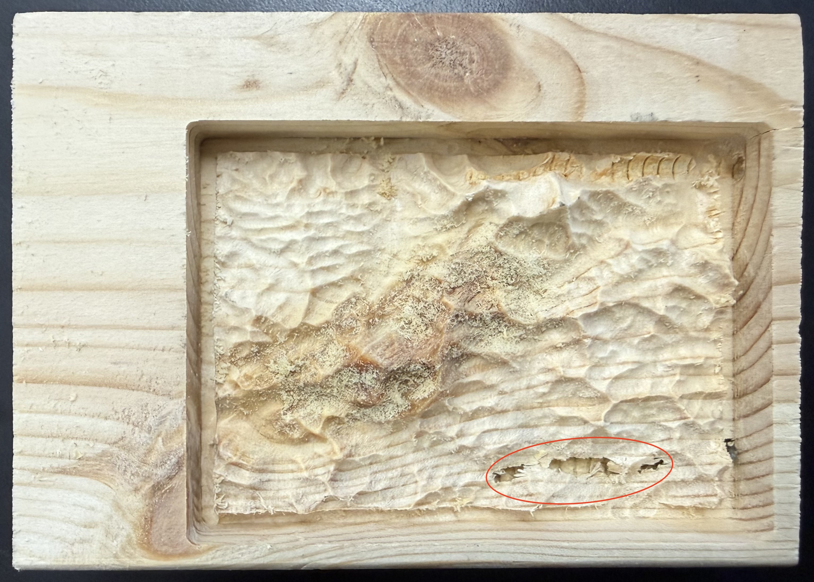

Topography
In this project, I milled the topography of the Himalayan Mountains out of a block of hardwood using a CNC machine and toolpaths generated in Vectric Aspire.
Table of Contents
Workflow
Creating the .CNC File in Aspire
- Download the STL file with the topography
- Go to jthatch.com/Terrain2STL
- Move the box over the desired geographical location adjust the size of the box, then increase the water and base settings to the max (this will make height differences more exaggerated).
- Generate the model by clicking the "Generate Model" button, then download the ZIP file and extract the STL from it
- Import the Model and Set Up Aspire to Generate Toolpaths
- Open Aspire, then define the material settings to match what is being cut
- Import the STL file by clicking "Import a Component or 3D Model" and selecting the STL file
- Orient the model by setting "Initial Orientation" to "Top" then changing the width, height, and depth to match the stock size. Ensure to uncheck "Lock XYZ ratio".
- Click "Apply" then "Center Model", then if the model looks correct, click "Position and Import"
- Use the slider bar on the left of the screen to set the "Position relative to Modeling plane" to the maximum (drag the slider all the way down)
- Create Toolpaths
- Switch to the "Design" tab and select "2D View". Then, center the object and draw a rectangle around the edge of the model
- Switch to the "Toolpaths" tab. Start by making a 3D Roughing Toolpath by clicking the "3D Roughing Toolpath" icon. The roughing toolpath cuts away the bulk of the unused material with a large, strong bit. For the topography, use the following settings:
- Tool: 25 mm Flute End Mill (3.175 mm)
- Machining Limit Boundary: Model Boundary
- Machining Allowance: 0.024"
- Strategy: Z Level
- Name: 3D Rough - 25 mm Flute End Mill (can be anything)
- Click "Calculate" when finished
- Next, create the "3D Finishing Toolpath". This uses a much more precise tool to slowly go over the entire model, creating a smooth, detailed final surface. For the topography project, use the following settings:
- Tool: 0.125" Ball Nose bit
- Machining Limit Boundary: Model Boundary
- Strategy: Raster (Set "Raster Angle" to 0° to go back and forth along the X-axis)
- Name: 3D Finish - 0.125 Ballnose (can be anything)
- Click "Calculate" when finished
- Finally, create a 2D Roughing Toolpath. The 2D Profile Toolpath cuts the model out of the larger block of wood. However, for this project, since the wood is thick, the cutting depth was set to 0.5" to create a guide for cutting the whole model out with a saw. For the topography project, use the following settings:
- Tool:25 mm Flute End Mill
- Machine Vectors: On
- Direction: Climb
- Name: 2D Profile - 25 mm Flute End Mill
- Click "Calculate" when finished
- Once all the toolpaths have been calculated, preview all of the toolpaths by clicking "Preview All Toolpaths". Check that the end product looks okay.
- Save the G-Code (toolpath files) by clicking "Close" to exit the "Preview Toolpaths" menu then clicking the "Save Toolpaths" button (looks like a floppy disk). Ensure that all 3 toolpaths are checked before clicking "Save Toolpaths", and that the right machine is selected. Once the button is clicked, either a .CNC or .GCODE file should be exported.
Milling the Topography on the Carvera Desktop CNC Machine
-
Open the Carvera Controller software on the desktop
-
In the top toolbar, click on the button with the status “N/A disconnected”
-
Select the appropriate COM port to connect the Carvera to the computer (if the COM port is already connected, leave it as is)
-
In the menu in the top right corner, click “Switch to display manual control interface” followed by the “Home” button
-
Under “Tool Status and Control,” ensure that the probe is charged to at least 3.6V (this ensures the machine operates in the z-axis as intended)
-
In the bottom left corner, open the G-code from your files
-
Before starting the mill, open the menu in the top right corner and click the “Switch to display file preview interface” to preview the toolpaths
-
Click “Config and run,” and ensure that the “auto vacuum” is on and “auto leveling” options is off.
-
Once all settings are verified, click “Run”
3D Printing a Mini Version
Before milling the full-size model out of wood, I first 3D printed a mini version of the topography to see how the final product would turn out. To do so, I imported the STL file into Bambu Studio and scaled the model down until it took less than 2 hours to print. I did so since all I wanted to see was how the detail would look, so there was no need to have a super large model. I then sliced the model and printed it out on a Bambu Lab A1 Mini printer.
Challenges I Overcame, Lessons I Learned, and What I Would Do Differently
Since I had already used Carvera Controller and the Carvera Desktop CNC Machine in the past, it was very easy for me to use them. However, until completing this project, I had not used Vectric Aspire for 2 years, so I was not very well-versed in using the software. Learning how to use the software well, such as learning where everything is located, what all the different menus do, etc., was a bit challenging, although the guides provided by Mr. Dubick were pretty helpful. Besides learning how to use Aspire, the process was very simple.
If I was to do the project differently, I would choose topography that is not quite as detailed. I chose the Himalayan Mountain Range as my topography, and there are a lot of peaks and troughs in close proximity, which caused the wood to break a little bit (pictured below). I would either choose a new location, or reduce the vertical scaling when generating a model on the topography to STL website.
Final Product
Below is an image of the milled topography. The details came out very nicely, except for the bottom right where it is broken. I am not sure whether that comes from a hollow section of wood or if the CNC machine applied too much force and splintered the wood. Nevertheless, it overall turned out pretty well.
